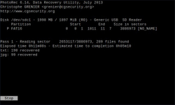
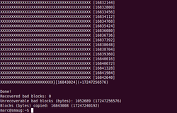

Datenrettung
Dieser Artikel wurde für die folgenden Ubuntu-Versionen getestet:
Dieser Artikel ist größtenteils für alle Ubuntu-Versionen gültig.
Zum Verständnis dieses Artikels sind folgende Seiten hilfreich:
Durch unvorsichtiges Vorgehen passiert es leider gelegentlich: Man löscht ein Verzeichnis oder eine Datei, obwohl man dies eigentlich nicht beabsichtigt hatte. Dieser Artikel erklärt, wie man gelöschte Dateien wiederherstellen kann und was man vorbeugend machen kann, damit das nicht öfters passiert. Des Weiteren wird beschrieben, wie man Daten von beschädigten Partitionen retten kann.
Nicht behandelt wird die Datenrettung auf dem Dateisystem ReiserFS.
Vorbeugen¶
Löschen¶
Beim Löschen folgendes beachten:
Überprüfen, welche Dateien man löscht
beim Löschen nur in den Papierkorb verschieben
vor dem Leeren des Papierkorbs ihn noch mal ansehen
Sicherungskopien¶
Regelmäßige Sicherungskopien anzulegen ist mittlerweile nicht mehr schwer. Es gibt eine Vielzahl an Programmen, die manuell oder automatisch Sicherungen anlegen.
Daten retten¶
Achtung!
Als allererstes sollte die Partition, auf welcher sich die gelöschten Dateien befanden, umgehend ausgehängt werden (beispielsweise mit der Tastenkombination Alt + Druck + U welche sofort sämtliche Schreibrechte entzieht). Jeder nachfolgende Schreibzugriff könnte die Dateien endgültig unwiederherstellbar machen, dies gilt also auch, für die nachträgliche Installation der unten genannten Datenrettungsprogramme.
Für die Datenrettung sollte die betreffende Partition fortan nur noch mit Leserechten eingehängt werden. Ist dies nicht möglich (weil sich z.B. auch das System auf der gleichen Partition befindet) kann auf ein Live-System zurückgegriffen werden.
Müssen zur Datenrettung Daten oder Partitionen auf dem Datenträger durch z.B. Wiederherstellung der Partitionierung verändert werden, sollte vorher von dem Datenträger ein Abbild (Image) angefertigt werden. Dies gilt vor allem für defekte Datenträger. Anschließend sollte nur von mittels safecopy oder ddrescue angelegten Images oder 1:1 Kopien der lesbaren Daten gearbeitet werden.
Natürlich gibt es nicht nur die hier erklärten Programme. Hier werden nur Programme zusammen mit einer Anleitung vorgestellt. Weitere Programme findet man auf den unter Links erwähnten Seiten.
ext3/ext4¶
Laut Wikipedia und anderen Seiten kann man unter ext3 sowie ext4 keine oder nur schwierig Daten retten. Beide Dateisysteme überschreiben bei Löschvorgängen die Block-Pointer der Inodes mit Nullen. Dies macht ein Wiederherstellen von Dateien nach einem angeforderten Löschvorgang vergleichsweise schwierig, verbessert aber die Wahrscheinlichkeit, dass die Integrität des Dateisystems nach einem Softwarefehler oder Hardwareausfall ohne Datenverlust wiederhergestellt werden kann (Quelle: Wikipedia).
Das Programm ext3rminator, das z.B. bei der Live-Linux-Distribution grml  dabei ist, bietet jedoch eine gute Möglichkeit, verlorene Dateien, die größer als 48 KB waren, wiederherzustellen. Dazu bootet man von der Live-CD und greift von dort aus auf die betreffende ext3-Partition zu [4]. Außerdem sind manche Programme, die unter ext2 genannt wurden, auch unter ext3 zu verwenden. So gibt es zumindest die Möglichkeit, Dateien teilweise zu retten. Eine etwas umfangreiche, aber erfolgversprechende Anleitung gibt es hier: HOWTO recover deleted files on an ext3 file system .
dabei ist, bietet jedoch eine gute Möglichkeit, verlorene Dateien, die größer als 48 KB waren, wiederherzustellen. Dazu bootet man von der Live-CD und greift von dort aus auf die betreffende ext3-Partition zu [4]. Außerdem sind manche Programme, die unter ext2 genannt wurden, auch unter ext3 zu verwenden. So gibt es zumindest die Möglichkeit, Dateien teilweise zu retten. Eine etwas umfangreiche, aber erfolgversprechende Anleitung gibt es hier: HOWTO recover deleted files on an ext3 file system .
extundelete ist ebenfalls ein Programm, um versehentlich gelöschte Dateien unter ext3 und ext4 wiederherzustellen. Auf der Internetseite ist ausführlich beschrieben, wie das Programm angewandt wird. Gefundene bzw. wiederhergestellte Dateien werden dem Verzeichnis RECOVERED_FILES abgelegt, dass im aktuellen Verzeichnis erstellt wird. Funktioniert auch einwandfrei mit einer LiveCD und einem externen Datenträger.
Ein weiteres interessantes Programm ist Ext4magic . Weitere Informationen sind der ausführlichen Dokumentation  und diesem Blogartikel zu entnehmen.
und diesem Blogartikel zu entnehmen.
lost+found¶
Der Ordner /lost+found/ (bei einer eigenen Partition für /home/ auch /home/lost+found/) enthält nach einer automatischen Dateisystemreparatur unter Umständen noch Dateien, die gerettet werden können (ohne Garantie auf Erfolg!). Mehr Details liefert der Blogbeitrag Recover files from lost+found .
ext2¶
Hinweis:
Das Dateisystem ext2 wird bei aktuellen Ubuntu-Versionen nicht eingesetzt. Der folgende Abschnitt ist daher eher historischer Natur, kann aber in manchen Fällen dennoch nützlich sein.
Um mit den genannten Werkzeugen Zugriff auf das entsprechende Dateisystem zu haben, muss man dieses zuerst aushängen. Falls man mit der Root-Partition arbeiten möchte, ist der Einsatz einer Live-CD oder eines Live-USB-Sticks zwingende Voraussetzung!
Neben den folgenden Ansätzen lohnt sich evtl. ein Blick auf giis .
e2undel¶
Mit e2undel kann man interaktiv und einfach Daten von einer ext2-Partition retten. Es ist über die offiziellen Paketquellen installierbar [1]:
e2undel (universe )
 mit apturl
mit apturl
Paketliste zum Kopieren:
sudo apt-get install e2undel
sudo aptitude install e2undel
Ist die Betriebssystem-Partition in den Datenverlust involviert, so ist es sinnvoll, e2undel mithilfe einer Live-CD zu nutzen. Auf diese Weise kann die Partition, auf der das Betriebssystem liegt, ohne Gefahr nach gelöschten Dateien durchsucht werden.
debugfs¶
Das Programm debugfs ist mit dem Paket
e2fsprogs
bereits standardmäßig installiert. Wer die englische Manpage nicht versteht, kann auf die deutsche Übersetzung zurückgreifen.
Das Programm im Terminal [2] starten:
debugfs
Dann mit folgendem Befehl in das Laufwerk wechseln:
open /dev/sda3
sda3 durch das Laufwerk ersetzen, auf dem Daten gerettet werden sollen. Zuerst sollte man mit folgendem Befehl alle gelöschten Dateien anzeigen lassen:
lsdel
Das Programm verwendet folgende Anzeige:
| Inode-Nummer | Benutzer-ID | Dateigröße | Lösch-Datum und -Uhrzeit | |
4711 | 1000 | 93678 | 6/ 6 | Sat Aug 12 20:43:55 2006 |
Nun kann man nach der zu rettenden Datei suchen, indem man Benutzer-ID, Dateigröße und Löschdatum (sofern bekannt) verwendet. Anschließend kann man die Datei mit folgendem Befehl retten:
dump [INODE-NUMMER] [Zieldatei]
Beispiel:
dump 4711 /tmp/recovered
Die erstellte Datei kann man sich dann in einem Editor [3] ansehen. Beenden mit:
quit
Rettung mehrerer Daten¶
Sind versehentlich nicht nur eine, sondern gleich mehrere Dateien gelöscht worden, ist es natürlich mühsam, jedesmal den dump-Befehl auszuführen. Um trotzdem recht komfortabel an die gelöschten Dateien zu kommen kann ähnlich vorgegangen werden, wie oben für eine einzelne Datei beschrieben.
Statt die Liste an gelöschten Dateien in debugfs auszugeben, werden sie in eine Textdatei ausgegeben. Dazu folgenden Befehl verwenden:
debugfs -R lsdel /dev/sda3 > deletedfiles.txt
sda3 durch das Laufwerk ersetzen, auf dem Daten gerettet werden sollen. lsdel listet alle Daten auf, die auf dem Datenträgern gelöscht wurden. Der Parameter -R sorgt dafür, dass der Befehl lsdel an debugfs übergeben wird (man kann alternativ auch den Befehl direkt in debugfs eingeben). > gibt die Liste, statt in debugfs, in die Textdatei ~/deletedfiles.txt im Homeverzeichnis aus. Diese Liste wird jetzt (als Root) mit einem Editor modifiziert. Die Liste sieht in etwa so aus:
| Inode-Nummer | Benutzer-ID | Dateigröße | Lösch-Datum und -Uhrzeit | |
4711 | 1000 | 93678 | 6/ 6 | Sat Aug 12 20:43:55 2006 |
. | . | . | . | . |
. | . | . | . | . |
. | . | . | . | . |
. | . | . | . | . |
. | . | . | . | . |
| 1000 deleted inodes found. |
Die erste und letzte Zeile löscht man. Hat man Inodes, die man nicht wiederhergestellt haben möchte, löscht man einfach die ganze Zeile. Nun sollte man die angepasste Liste abspeichern.
Es wird ein Ordner erstellt, in dem die geretteten Daten gesammelt werden.
mkdir /home/BENUTZERNAME/restored
Die angefertigte Liste wird nun, mit Hilfe einer Schleife, an debugfs weitergegeben.
cat deletedfiles.txt | while read a b; do debugfs /dev/sda3 -R "dump -p <$a> /home/BENUTZERNAME/restored/file$a" ; done
sda3, wie immer, durch das Laufwerk ersetzen, auf dem Daten gerettet werden sollen.
Der Vorgang kann unter Umständen mehrere Stunden dauern. Alle Dateien sollten nun in /home/BENUTZERNAME/restored liegen - leider nicht mehr mit dem ursprünglichen Dateinamen, aber immerhin sind die Daten wieder da!
grep¶
grep ist ebenfalls bereits standardmäßig installiert. Folgendes im Terminal [2] eingeben:
grep -a -B[ZAHL] -A[ZAHL] "[SUCHBEGRIFF]" /dev/sda* >[ZIELDATEI]
Beispiel:
grep -a -B200 -A600 "Doktorarbeit" /dev/sda3 >/tmp/recovered
Dieser Befehl speichert alle Daten, die 200 Zeilen vor und 600 Zeilen nach der Zeichenkette Doktorarbeit auf /dev/sda3 gefunden werden, in die Datei /tmp/recovered. Die Datei kann man sich in einem Editor [3] ansehen. Zum Schluss muss man das zuvor ausgehängte Dateisystem natürlich wieder einhängen.
FAT¶
(FAT, FAT12/16/32, exFAT)
Fehler im FAT-Dateisystem lassen sich unter Windows mit chkdsk beheben. Beispiel für eine FAT-Partition mit dem Buchstaben D:
chkdsk D: /F /V
NTFS¶
Fehler im NTFS-Dateisystem lassen sich unter Windows mit chkdsk beheben (siehe FAT).
Um Windows aufzufordern, beim nächsten Booten ein NTFS-Dateisystem zu reparieren, gibt es den Linux-Befehl ntfsfix. Dazu muss das Paket ntfsprogs (bis Ubuntu 11.04) installiert sein. Ab Ubuntu 11.10 ist ntfsprogs durch die Verschmelzung von 2 Projekten und somit einer neuere Version im Paket ntfs-3g enthalten.
Beispiel für eine NTFS-Partition auf einer Dual-Boot Festplatte. sda3 steht dabei für die 3. Partition auf der ersten Festplatte die bei einem Dual-Boot System meistens die Datenpartition für Windows darstellt.
sudo ntfsfix /dev/sda3
Für Windows gibt es im Internet einige weitere brauchbare Programme, siehe Links.
Offene Dateien¶
Mit Hilfe des Befehls lsof (steht für list open files) ist es möglich, versehentlich gelöschte Daten wiederherzustellen, wenn diese zum Zeitpunkt des Löschens von einem anderen Programm geöffnet sind. Der Rettungsvorgang muss dann auch unmittelbar nach dem Löschen erfolgen, da die Datei - vereinfacht gesagt - für das System dann immer noch geöffnet ist, obwohl sie gerade gelöscht wurde. Da dieser Fall wohl eher selten vorkommt, wird an dieser Stelle auf eine weiterführende Erklärung verzichtet und stattdessen auf die sehr gute Erklärung auf dieser Seite verwiesen.
Tricks¶
In manchen Fällen wird kein Wiederherstellungsprogramm benötigt, weil ein Ordner entweder unwichtig ist oder durch ein Programm erneut angelegt werden kann.
| Ordner | Begründung | Terminal-Befehl [2] |
| /usr/share/PAKETNAME | Diese Ordner enthalten Programmdateien und können durch eine Neuinstallation des jeweiligen Pakets wiederhergestellt werden | sudo apt-get install --reinstall PAKET |
| ~/.cache/ | Der Ordner im Homeverzeichnis ist eine Art Zwischenspeicher für Programme, damit sie Dateien nicht bei jeder Abfrage erneut erstellen/herunterladen müssen. Meistens gibt es keine Probleme, wenn der Inhalt gelöscht wird. |
Sehr oft sind auf einem Datenträger innerhalb einer erheblichen Datenmenge nur wenige Dateien verschmerzbar irreparabel beschädigt, z.B. nach einem Headcrash. In diesem Fall kann man schnell und unkompliziert mit dem Werkzeug rsync unter Verwendung der Option --ignore-errors die noch lesbaren Dateien eines Verzeichnisses kopieren. Unlesbare Daten werden dabei einfach ignoriert, ohne dass der Kopiervorgang abbricht.
rsync -av --ignore-errors QUELLE ZIEL
Bei einem zweiten Durchlauf kann man sich ein Logfile anlegen lassen und erhält dann über diesen Umweg eine Liste der beschädigten Dateien.
rsync -av --log-file=FILE QUELLE ZIEL
Partitionen retten¶
Gelöschte/defekte Partitionstabelle retten¶
Achtung!
Das Ändern der Partitionstabelle ist immer sehr risikoreich! Ein Reparaturversuch kann evtl. mehr Schaden anrichten als er nützt. Deswegen besser vorher die Platte komplett mit dd klonen und versuchen, die Kopie zu reparieren!
Ist, aus welchem Grund auch immer, die Partitionstabelle beschädigt oder wurden Partitionseinträge gelöscht, kann man eine Rettung mit TestDisk probieren. Das Programm installiert man mit dem gleichnamigen Paket [1]:
testdisk (universe)
mit apturl
Paketliste zum Kopieren:
sudo apt-get install testdisk
sudo aptitude install testdisk
Das Programm startet man einfach:
sudo testdisk
Es bietet ein intuitiv zu bedienendes Text-Menü. Um TestDisk auf ein Festplattenabbild (Image) anzuwenden, stellt man dieses dem Befehl hinten an:
sudo testdisk /pfad/zum/image.img
Eine andere Variante wird im Artikel Festplatten Problembehebung beschrieben. Weitere Informationen findet man auch in den offiziellen TestDisk-Dokumentation .
Haupt-Partition reparieren lassen, wenn nur noch Lese-Zugriff¶
Wenn plötzlich Meldungen folgender Art erscheinen:
"Prozess Erstellung des Ein-/Ausgabemoduls nicht möglich: Read-only file system kann nicht gestartet werden."
"Einrichtungsdatei /home/BENUTZERNAME/.kde/share/config/systemsettingsrc lässt sich nicht speichern."
"/dev/sda3: Unexpected inconsistency fsck died exit status 4" (beim Versuch neu zu booten)
dann enthält die Haupt-Partition einen Schreibfehler und wurde daher automatisch auf "Nur-Lesbar" gestellt.
Abhilfe ist die Überprüfung für die Haupt-Partition (die meistens sda1 heißt und vom Typ ext3 ist). Dazu startet man per KNOPPIX oder einer anderen Live-CD und kann nun die Haupt-Partition in Ordnung bringen, denn die Partition darf nicht gemountet sein. Dazu gibt man folgenden Befehl im Terminal [2] ein:
sudo fsck.ext3 -v -f /dev/sda1
Wenn sehr viele Fragen mit "j" beantwortet werden müssen, kann man mit
Strg +
C abbrechen und den Befehl mit dem folgenden Parameter noch einmal starten: "-y".
Partitionen retten, wenn Reparatur nicht mehr möglich ist¶
Ist eine komplette Partition nicht mehr lesbar, weil z.B. Teile des Dateisystems beschädigt sind, so gibt es auch hier die Möglichkeit, die noch "guten" Daten mit Hilfe des Programms dd_rescue zu retten. Wenn man die Wahl hat sollte gddrescue benutzt werden.
Ist die Boot-Partition defekt, so muss man ddrescue bzw. dd_rescue natürlich von einer Live-CD aus ausführen.
Hinweis:
ddrescue und dd_rescue ist für defekte Partitionen gedacht, nicht für Partitionen, die versehentlich formatiert wurden!
ddrescue¶
gddrescue ist ein Programm zur Datenrettung von defekten Datenträgern. Die Funktionsweise ist im Artikel beschrieben. Es ist eine Weiterentwicklung von dd_rescue. Das Programm in diesem Paket heißt ddrescue (ohne Unterstrich). Um es zu installieren muss folgendes Paket installiert werden:
gddrescue (universe)
Hinweis:
Nicht durcheinander kommen: Das Paket ddrescue enhält das Programm dd_rescue (mit Unterstrich). Das Paket gddrescue enhält das Programm ddrescue (OHNE Unterstrich).
dd_rescue¶
Für dd_rescue muss das dd_rescue über folgendes Paket installiert werden [1]:
ddrescue (universe)
Die Anwendung von dd_rescue ist relativ simpel und sehr ausführlich auf linux-user.de beschrieben.
Dateien aus Image extrahieren¶
Nachdem ein Image mit dd bzw. ddrescue erstellt wurde, kann man nun damit beginnen, Dateien aus dem Image zu extrahieren. Dazu gibt es mehrere Werkzeuge.
tsk_recover¶
Das Programm tsk_recover ist im folgenden Paket enthalten [1]:
sleuthkit (universe)
mit apturl
Paketliste zum Kopieren:
sudo apt-get install sleuthkit
sudo aptitude install sleuthkit
Nach der Installation kann man gleich beginnen, Dateien aus dem dd-Image zu extrahieren:
tsk_recover -a dd_image_datei.img Ausgabeordner
Wobei der Ausgabeordner zuvor selber erstellt worden sein muss. Die Option -a bewirkt, dass lediglich ungelöschte Dateien u. Ordner in den Ausgabeordner kopiert werden, mit -e wird alles kopiert und ganz ohne Optionen werden nur die gelöschten Inhalte kopiert.
Weitere Informationen findet man in einem ausführlichen Linux-Magazin-Artikel sowie in der Man-Page.
|  |
| PhotoRec |
PhotoRec¶
PhotoRec stellt aus intakten und beschädigten Dateisystemen (nicht nur aus Images) verlorene Dateien von mehr als 180 Dateiformaten aus über 100 Dateifamilien wieder her (Bilder, Videos, Office, Archive, und viele mehr: Liste wiederherstellbarer Dateiformate).
Das Programm PhotoRec ist im folgenden Paket enthalten [1]:
testdisk (universe)
mit apturl
Paketliste zum Kopieren:
sudo apt-get install testdisk
sudo aptitude install testdisk
Anwendung: z. B. Datenrettung aus oben erwähntem dd-Image:
sudo photorec dd_image_datei.img
Zur Verwendung an anderen Dateisystemen
sudo photorec
Man muss sich nun durch das Text-Menü hangeln und die Extraktion starten. Weitere Informationen findet man in der offiziellen PhotoRec-Dokumentation und in einer ausführlichen Schritt-für-Schritt-Anleitung .
Hinweis:
PhotoRec stellt grundsätzlich nur Datei-Inhalte, aber keine Datennamen wieder her.
Zur Aufbereitung (Filterung und Sortierung) der zahlreichen gewonnenen Dateien kann die Skript-Lösung sort_recovered hilfreich sein. Es gibt jedoch auch die offizielle Anleitung Dateien nach Gebrauch von Photorec nachbearbeiten und sortieren und deren Korrektur, welche zusätzlich auch das Auffinden und Neubenennen von Bildern, Öffnen defekter MS Office Dokumente sowie die Wiederherstellung defekter MS Outlook Emails behandelt.
Wenn man Office-Dateien von Open Office oder Libre Office im Standardformat ODT retten will, kann man diese anhand von Suchworten der Dokumenteninhalte wiederfinden:
Dabei sind Root-Rechte nötig und odt2txt wird installiert.
sudo -i
apt-get install odt2txt
find ordner -type f -name "*.odt" -exec bash -c 'odt2txt '{}' 2>/dev/null | egrep -i "dIpLoM|abrechnung" && echo -e "## Quelle: '{}'\n"' ';'
exit Die gelben Markierungen müssen angepasst werden: Suchordner, Dateiendung, Suchbegriff(e). Die Dateiendung geretteter Textdokumente könnte abweichend sein.
DOC-Dateien kann man folgendermaßen nach Suchbegriffen durchsuchen, um seine wichtigsten Dokumente aus der Fülle geretteter Dateien wiederzufinden:
Dabei sind Root-Rechte nötig und antiword wird installiert.
sudo -i
apt-get install antiword
find ordner -type f -name '*.doc' -exec bash -c 'antiword '{}' 2>/dev/null | egrep -i "Abrechnung|Diplomarbeit" && echo -e "## Quelle: '{}'\n"' ';'
exit Auch hier gilt: Die gelben Markierungen müssen angepasst werden: Suchordner, Dateiendung, Suchbegriff(e). Die Dateiendung geretteter Textdokumente könnte abweichend lauten.
Für das Durchsuchen von PDF-Dateien kann man pdfgrep verwenden, vorausgesetzt, sie basieren auf Textdateien und nicht auf Scans oder Fotos bzw. Bildern.
Sonstige Anwendungen¶
recoverjpeg¶
recoverjpeg dient ausschließlich dazu, JPEG-Dateien auf Wechseldatenträgern oder Festplatten wiederherzustellen. Es eignet sich daher sehr gut, um gelöschte Bilder auf dem Speicherchip einer Digitalkamera wiederherzustellen. Das Programm ist den Paketquellen von Ubuntu enthalten und kann über das folgende Paket installiert [1] werden:
recoverjpeg (universe)
mit apturl
Paketliste zum Kopieren:
sudo apt-get install recoverjpeg
sudo aptitude install recoverjpeg
Anschließend kann man es über ein Terminal [2] auf einen ganzen Datenträger oder eine Partition ansetzen.
# Allgemein recoverjpeg DATENTRÄGER # Beispiel 1 recoverjpeg /dev/sdc # Beispiel 2 recoverjpeg /dev/sda3
recoverjpeg versucht nun gelöschte Bilder auf dem Datenträger zu finden und speichert sie als image<nummer>.jpg im aktuellen Verzeichnis ab.
|  |
| safecopy |
safecopy¶
safecopy bietet die Möglichkeit, Daten von defekten Datenträgern zu retten. Es liest Disketten blockweise aus und schreibt die fehlerfreien Daten in eine Ausgabedatei. Fehlerhafte Blöcke versucht das Programm auszulesen – sofern keine Rettung möglich ist, überspringt safecopy den defekten Block und fährt mit der Datenrettung fort.
Es ist über das folgende Paket zu installieren [1]:
safecopy (universe)
mit apturl
Paketliste zum Kopieren:
sudo apt-get install safecopy
sudo aptitude install safecopy
Es wird über das Terminal [2] aufgerufen.
| safecopy | |
| Parameter | Beschreibung |
| safecopy /dev/device ~/diskimage | Image des Dateisystems vom beschädigten Datenträger erstellen. |
Um das Programm in allen Möglichkeiten nutzen zu können sollte man die Man-Page durchlesen.
Links¶
 Was tun in Notfällen?
Was tun in Notfällen? Extern¶
Data Recovery
- in der englischen Ubuntu-DokumentationWiederherstellen von Dateien von beschädigten Speicherkarte mit PhotoRec
The Sleuth Kit / Autopsy Browser
- Forensik-Werkzeugsafecopy
- Datenrettungsprogramm, in den offiziellen Paketquellen enthaltenDatarecovery
- umfangreiche Linkliste, Datenwiederherstellung unter Linux u.a.Hachoir - Forensic and data recovery
- Übersicht nützlicher WerkzeugeDatenrettung unter Ubuntu
- Merkblatt, 04/2014Automatisiertes Wiederherstellen von Dateien mit Sleuthkit 3.2
– Linux-Magazin, 03/2011Datenrettung mit Knoppix
- c't 06/2008 (Februar 2008)Retten gelöschter Dateien unter ext2
- Blogbeitrag, 07/2002
Windows-Programme¶

Linux Ext2/Ext3 data recovery for Windows
- Komfortable Rettung gelöschter Dateien/VerzeichnisseDatenrettung
- Giga Software (früher Winload.de)
- Erstellt mit Inyoka
-
 2004 – 2017 ubuntuusers.de • Einige Rechte vorbehalten
2004 – 2017 ubuntuusers.de • Einige Rechte vorbehalten
Lizenz • Kontakt • Datenschutz • Impressum • Serverstatus -
Serverhousing gespendet von